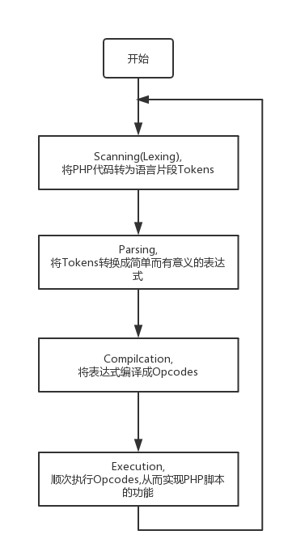

PHP实现了一个典型的动态语言执行过程：拿到一段代码后，经过词法解析、语法解析等阶段后，源程序会被翻译成一个个指令(opcodes)，然后ZEND虚拟机顺次执行这些指令完成操作。

PHP的执行的核心是翻译出来的一条一条指令，也即opcode。
PHP代码：
1 | <?php |
PHP执行这段代码会经过如下4个步骤：
Scanning (Lexing), 将PHP代码转换为语言片段(Tokens)
Parsing，将Tokens转换成简单而有意义的表达式
Compilation，将表达式编译成Opcodes
Execution，顺次执行Opcodes，每次一条，从而实现PHP脚本的功能。
什么是Lexing？Lex是一个词法分析依据表，Zend/zend_language_scanner.c会根据Zend/zend_language_scanner.l(Lex文件)，来输入的 PHP代码进行词法分析，从而得到一个一个的“词”，PHP提供了一个函数token_get_all，这个函数就可以将一段PHP代码Scanning成Tokens。
如果用这个函数处理上面的PHP代码，
1 | <?php |
将会得到如下结果:
1 | Array |
分析这个返回结果我们可以发现，源码中的字符串，字符，空格，都会原样返回。每个源代码中的字符，都会出现在相应的顺序处，而其他的比如标签，操作符，语句，都会被转换成一个包含俩部分的Array: Token ID (也就是在Zend内部的改Token的对应码，比如,T_ECHO,T_STRING)，和源码中的原来的内容。
接下来，就是Parsing阶段了，Parsing首先会丢弃Tokens Array中的多于的空格，然后将剩余的Tokens转换成一个一个的简单的表达式，
1. echo a constant string
2. add two numbers together
3. store the result of the prior expression to a variable
4. echo a variable然后就是Compilation阶段了，它会把Tokens编译成一个个op_array, 每个op_arrayd包含如下5个部分：
1. Opcode数字的标识，指明了每个op_array的操作类型，比如add , echo
2. 结果 存放Opcode结果
3. 操作数1 给Opcode的操作数
4. 操作数2
5. 扩展值 1个整形用来区别被重载的操作符比如，上面的PHP代码会被Parsing成:
* ZEND_ECHO 'Hello World'
* ZEND_ADD ~0 1 1
* ZEND_ASSIGN !0 ~0
* ZEND_ECHO !0恩，这个要介绍操作数了，每个操作数都是由以下俩个部分组成：
a). op_type : 为IS_CONST, IS_TMP_VAR, IS_VAR, IS_UNUSED, or IS_CV
b). u,一个联合体，根据op_type的不同，分别用不同的类型保存了这个操作数的值(const)或者左值(var)
而对于var来说，每个var也不一样
IS_TMP_VAR, 顾名思义，这个是一个临时变量，保存一些op_array的结果，以便接下来的op_array使用，这种的操作数的u保存着一个指向变量表的一个句柄（整数），这种操作数一般用开头，比如0,表示变量表的0号未知的临时变量
IS_VAR 这种就是我们一般意义上的变量了,他们以$开头表示
IS_CV 表示ZE2.1/PHP5.1以后的编译器使用的一种cache机制，这种变量保存着被它引用的变量的地址，当一个变量第一次被引用的时候，就会被CV起来，以后对这个变量的引用就不需要再次去查找active符号表了，CV变量以！开头表示。
所以 $a被优化成!0了。